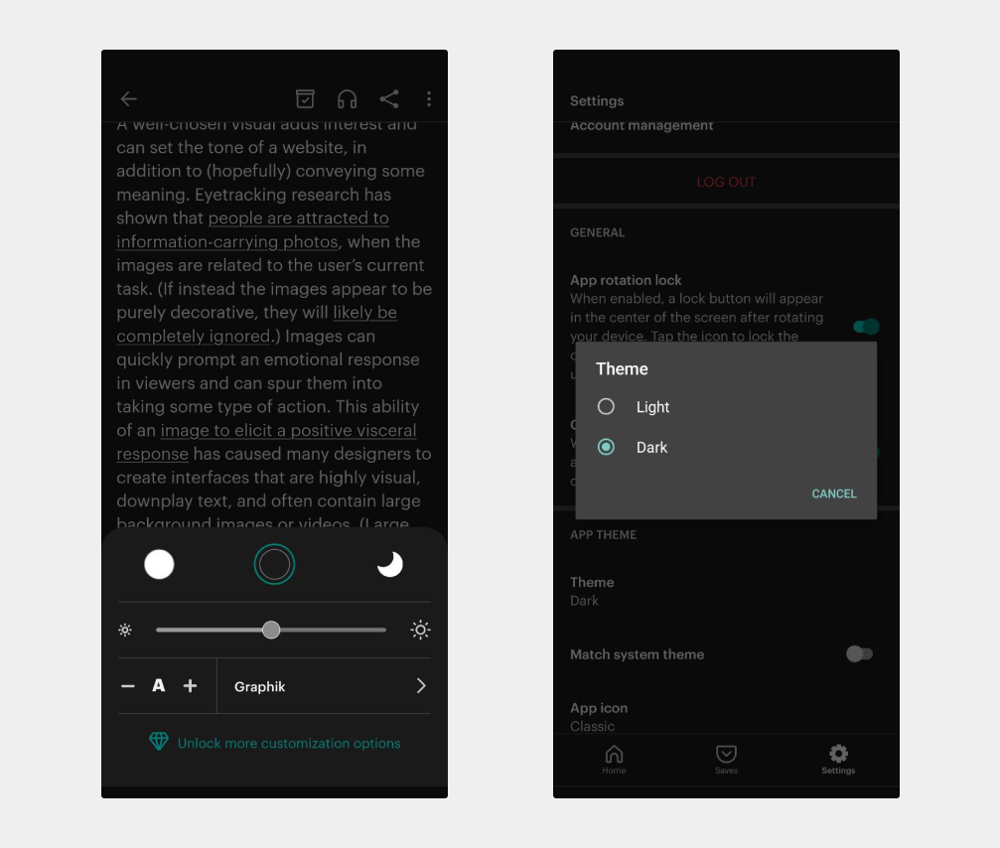
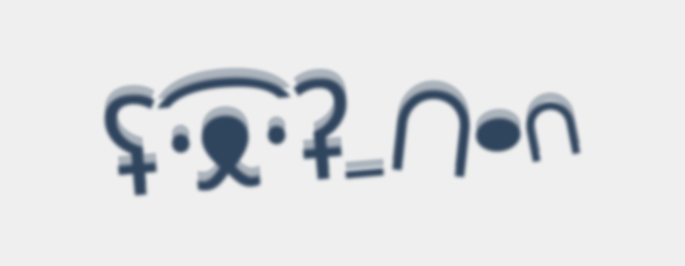
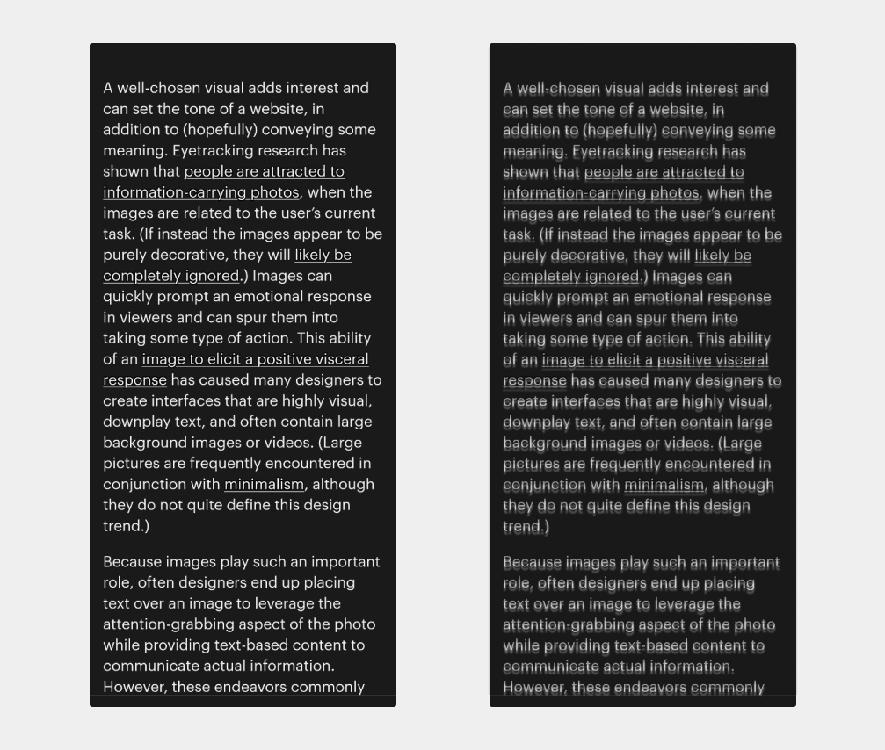
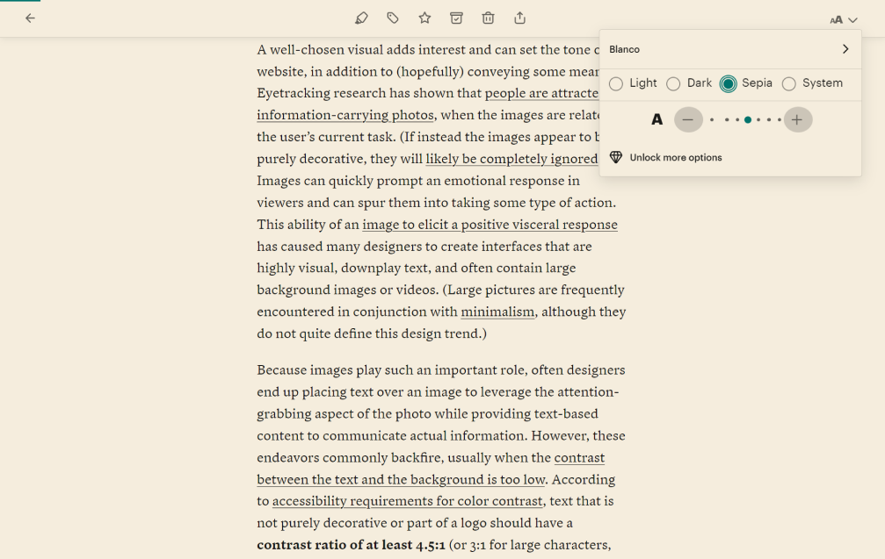
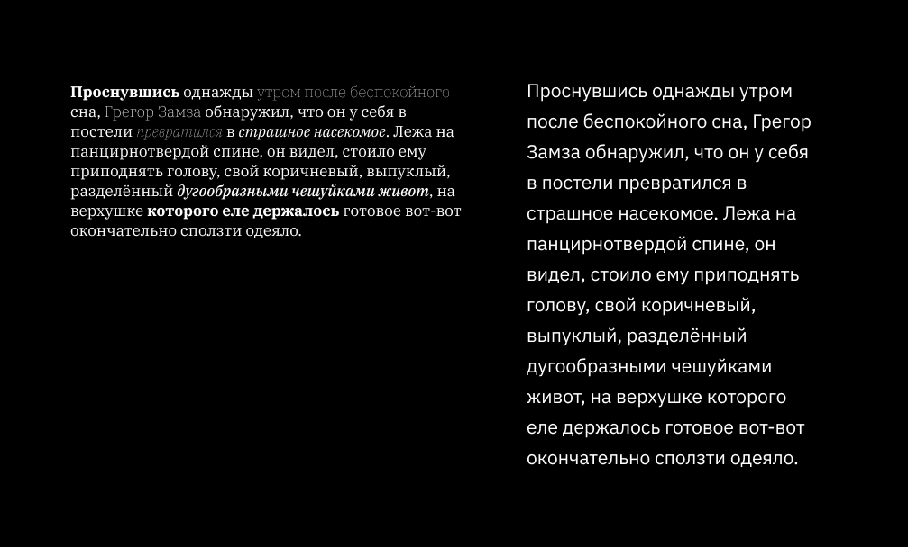

Нужен ли режим сепии по умолчанию?
- Дизайн
- Контент
Мне нравится Pocket. Нет, не так: я обожаю Pocket. В нём храню в одном месте кучу статей и постов, которые планирую почитать. Иногда текстов накапливается слишком много, и из-за этого желание читать пропадает, но это уже не проблема Pocket.
Pocket — сервис для хранения браузерных закладок. Так удобно хранить все страницы в одном месте, а не в открытых вкладках (да-да, говорю про тебя).
Другая причина, почему нравится Pocket, — консистентный пользовательский опыт. Я имею дело только со шрифтом одного типа и размера, а ещё с одинаковой шириной колонок и предсказуемыми цветами. Другой плюс — нет отвлекающей графики, анимации и других фишек дизайна. В премиум-аккаунте ещё больше настроек.
Мобильный Pocket работает и в оффлайн, чем пользуюсь, когда нет интернета. Нужно только заранее синхронизировать накопленные страницы.
В посте поделюсь личным опытом и барьером с доступностью, с которым столкнулась неожиданно для себя. Как всегда делите чужое мнение на два, а моё тем более. Нет одинаковых людей с астигматизмом, которые делят один опыт на всех. Конечно же ни в чём не обвиняю и команду Pocket ❤️
Личный барьер
Несколько месяцев назад открыла мобильный Pocket и заметила, что тёмная тема установлена по умолчанию. Это странно: я же включаю режим с сепией везде, где можно. В настройках нашла только стандартную тёмную, светлую и системную тему.

Как только зашла в приложение и открыла статью, глаза попросили пощады: они перенапряглись и заболели. Cосредоточиться на чтении тоже оказалось непросто. Слова сливались в один мерцающий комок текста, а следующая строка убегала в закат.
Дело в том, что у меня астигматизм, и глаза не дружат с тёмными темами и высокой контрастностью. В случае Pocket проблему решила бы платная подписка, но возник вопрос: пользователям правда нужны только тёмная и светлая темы?
Астигматизм, приятно познакомиться
Астигматизм — дефект зрения, характеризующийся неравномерной кривизной полусферы роговицы глаза и отсутствием единой фокусной точки… Если просто, то у части людей роговица слегка сплюснута вместо того, чтобы быть шарообразной.
Зрение — результат преломления света через переднюю часть глаза (роговицу) на заднюю часть глазного яблока (сетчатку). Дальше зрительный нерв и мозг завершают начатое и отдают итоговую картинку.
На сетчатке людей с астигматизмом не проецируется чёткое изображение, потому что свет не сконцентрирован в одной точке, как должен. В результате предметы, на которые смотрите, кажутся размытыми, искажёнными и частично оказываются вне фокуса. Дополнительно объекты вокруг слегка двоятся (диплопия) и нечётко видны на близком и дальнем расстоянии без специальных очков и линз. Это как если бы две (2) идентичных картинки на полупрозрачной бумаге наложили друг на друга и они не совпали.

Из-за астигматизма глаза перенапрягаются из-за некоторых раздражителей. Например, из-за вспышек, глянцевых поверхностей и высокого контраста цветов. Другие симптомы астигматизма — повышенная светочувствительность, проблемы с ночным зрением, головные боли, усталость и ореолы вокруг источников света.
Ореолы — раздражающий симптом. Ситуацию, когда объекты размываются из-за «свечения», называют гало-эффектом. Этот эффект работает как с физическими источниками света, так и с цифровыми. Из-за этого сложно читать неоновые вывески в темноте, чётко видеть на улицах с кучей лампочек и гирлянд, особенно в дождь, или читать тексты в тёмном режиме.
Работать и читать в тёмных интерфейсах так больно из-за работы зрачков. Представьте, что купили профессиональный фотоаппарат. Когда снимаете при плохом освещении, камере нужно больше света. Вы профессионал, поэтому вручную устанавливаете выдержку. Чтобы фотография получилась в темноте, нужно больше света. Это значит, что лепестки, из которых состоит диафрагма, широко раскрываются. Слишком много света тоже испортит фотографию, так что диафрагму в этом случае закрывают.
Объектив фотоаппарата работает так же, как наши глаза. В тёмной комнате зрачки становятся больше, а при ярком свете — меньше. Когда читаете чёрный текст на белом фоне, в глаза проникает больше света, поэтому зрачки уменьшаются. Наоборот, при чтении белого текста на чёрном фоне, глаза получают меньше света, так что они увеличиваются.
Люди с астигматизмом чувствительны к уровню освещения. В темноте сложнее видеть чётко, а при хорошем свете легче фокусироваться на окружающих объектах. Так происходит, потому что зрачки уменьшаются, из-за этого свет не так рассеивается и чуть прицельнее попадает на сетчатку. Это сглаживает симптомы астигматизма.
Жизнь в бежевых тонах
Гало-эффект проявляет себя во всю силу в тёмных интерфейсах. В тёмном режиме белые буквы окружены ореолами и как будто «светятся», размываются и сливаются друг с другом. Читать такой текст не просто и даже болезненно для глаз.
Приведу пример. На первом экране приложения Pocket с тёмным режимом текст выглядит обычным. Слова легко читаются, у букв и cтрок чёткие границы. На втором экране показала примерно то, как я вижу тот же самый текст. Он размывается и двоится, поэтому сложно разобрать слова и перевести взгляд на нужную строчку.

Простой способ убрать гало-эффект в тексте — включить режим сепии.
Сепия — это красновато-коричневый цвет, светлые оттенки которого не слишком тёмные или яркие, поэтому при любом цвете текста не получится высокого соотношения контраста. Кстати, сепия ещё спокойная, умиротворяющая и напоминает цвет страниц в старых книжках.
Включить режим сепии можете в веб-версии Pocket, откуда он пока не пропал. Зайдите в настройки отображения и найдите опцию сепии рядом с размером шрифта и другими цветовыми режимами.

Сепия на фоне страницы помогает пользователям с астигматизмом читать тексты, особенно длинные. На самом деле, это не просто вопрос того, насколько вам комфортно читать. В каких-то случаях вы буквально можете читать, а после не бороться с глазной или головной болью.
Другие факторы
Белый текст на чёрном фоне не единственный фактор, который вставляет палки в колёса комфортному чтению. На пользователей с астигматизмом влияют также читаемость и разборчивость текста.
Читаемость отвечает за то, насколько легко читать тексты. Свойство зависит от семейств и размеров шрифтов, межстрочных интервалов, длины строки, цвета и контраста.
Разборчивость отвечает за чёткость и различимость символов и букв. На разборчивость влияет тип шрифта, интервалы между буквами и символами, их ширина и начертания.
Когда складываете плохую читаемость, разборчивость и тёмный режим вместе, в мире становится чуть больше грустных пользователей с астигматизмом 😩
Сравните два идентичных белых текста на ярко-чёрном фоне. В первой, более широкой колонке, использую шрифт с засечками IBM Plex Serif с размером 17 пикселей и разные начертания (полужирное, жирное, тонкое, курсив и так далее). Строке текста задала автоматическую высоту в 22 пикселя. Для второй, более узкой колонки, выбрала шрифт без засечек IBM Plex Sans с размером 21 пиксель и со стандартным начертанием. Также увеличила высоту строки до 34 пикселей.

Сложнее прочесть текст из первой колонки, чем из второй, хотя для них использую одинаковый белый цвет и чёрный фон.
Быть или не быть
У примерно 40 % взрослых на планете есть астигматизм, так что диагноз встречается где-то у одного (1) из трёх (3) человек. Это делает астигматизм одним из самых распространённых заболеваний глаз.
Тёмные темы экономят заряд батареи на устройствах с определённым типом экрана, приятно выглядят, а ещё делают интерфейсы более доступными для пользователей со светочувствительностью, глаукомой и близорукостью. Вы легко найдёте статистику и исследования, которые подтверждают, что пользователи предпочитают тёмный режим. Бизнес любит цифры.
Для того чтобы сделать объективные выводы для исследования, важно правильно интерпретировать данные и учитывать детали. Исследования о пользователях тёмных тем не всегда отвечают на все вопросы:
- сколько людей с астигматизмом среди тех, кто предпочитает тёмные интерфейсы;
- почему люди не пользуются светлыми темами активнее;
- выбрана ли тёмная тема и в системе, и в браузере.
Не забудьте о людях с синдромом дефицита внимания и гиперактивности (СДВГ), дислексией или другими нейроотличиями. Пользователи, которые избегают тёмных режимов, не всегда с астигматизмом. Статистика не отражает количества нейроотличных людей.
Возможно, разработчики и дизайнеры просто поверили, что тёмный цветовой режим — это единственная альтернатива светлой теме. На самом деле нет одного правильного решения.
Было бы смело призвать всех здесь и сейчас внедрить несколько тем или цветовых настроек. Это хорошая новость для менеджеров, ха-ха.
Зато в наших силах внимательнее присмотреться к тёмному режиму и не считать доступным по умолчанию. Можно вообще не использовать ярко-чёрный и белый цвета. В мире между чёрным и белым есть ещё серый, бежевый и сепия.
Что почитать
- Why ‘dark mode’ causes more accessibility issues than it solves, Эйч Локк.
- Are dark themes really better for your eyes and battery?, Эндрю Браун.
- Dark mode vs. light mode: Which is better?, NN/g.
- Alternatives to using pure black (#000000) for text and backgrounds, Дмитрий Сергушкин.
- Sensory perception and interaction research group at the University of British Columbia.
- Astigmatism and dark mode, Люк Вайлд.
Другие статьи
- Чеклист читабельность Предыдущая
- Клавиатура Следующая